Table of Contents
To install WPJobAds, you must first meet the minimum server system requirements:
Installing WPJobAds is straightforward: install it just like you would any other plugin. Upload the folder wpjobads to the wp-content/plugins directory of your WordPress installation and activate it via the Plugin administrative page.
The installation process will create one page entry, two additional tables: wpjobads_category and wpjobads_job (prefixed with whatever your WordPress tables are prefixed with), one option entry: wpjobads_options and one top level menu.
To enable logging, simply make the logs folder writable. Logs are grouped and put in files according to their date (e.g, 2008-10-25.txt and so on).
After installation, click on the top level menu "WPJobAds" and you will be presented a form where you need to insert your license key:
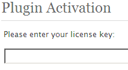The Job Listing page lists all active job ads sorted by their expiry date and grouped by category. The category grouping order can be reordered via the admin panel.
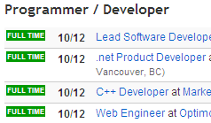New job ad submission form can be accessed via the invite link in the Job Listing page or Sidebar Widget.
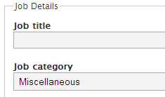The fields are by default divided into two fieldsets, Job Details and Employer Details. All fields are mandatory except for Zipcode and Company URL.
The Overview page shows how old your WPJobAds version.
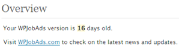The Jobs page lists your job ads:
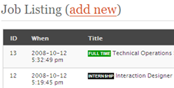You can directly add new job ads:
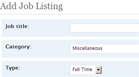Keep in mind that all fields are mandatory except for Zipcode and Company URL. One field you would not normally fill in manually is PayPal Transaction ID.
The Awaiting Approval page gives you a nice list of new job ads waiting for moderation. You can approve, edit or delete incoming job ads.
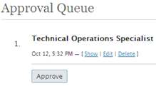The Categories page gives you the available categories. You can add, edit, delete and even set the view ordering of each category.
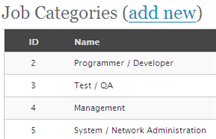The Options page gives you full control of WPJobAds
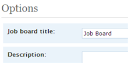The following is a list of all options within WPJobAds and their explanation:
| Option | Explanation |
|---|---|
| Job board title | |
| Description | Shown at the top of the front-end job ad submission form. |
| Invite | The link label inviting potential advertisers to advertise (e.g, "Post a job and find the right person"). |
| Enable new job listings | Enables or disables the front-end job ad submission form. |
| Auto approve listings (new in 1.2) | Enables or disables auto approval of any incoming job ads. Utilize this option with care. |
| Send payment email on auto approve (new in 1.2.2) | Checking this will send the payment email message (if any) even if auto approve is on |
| Duration | How long the ad will be up for display in days. |
| Currency | Currencies supported by PayPal |
| Full time price | |
| Part time price | |
| Freelance price | |
| Internship price | |
| PayPal email | Your PayPal account email address. |
| PayPal URL | The PayPal URL. This is normally https://www.paypal.com/cgi-bin/webscr for the live server and https://www.sandbox.paypal.com/cgi-bin/webscr for the test server. |
| PayPal verification URL | The PayPal verification URL used to verify IPN data. This is normally ssl://www.paypal.com:443/cgi-bin/webscr for the live server and ssl://www.sandbox.paypal.com:443/cgi-bin/webscr for the test server. |
| SSL availability (new in 1.2.3) | Determines whether SSL is installed or not. In order for PayPal to work right, you must enable SSL (openssl) support. |
| Job listing date format | The date format used in the job listing area. Documentation on date formatting in WordPress. |
| Terms | The terms & conditions shown to advertisers prior to submitting their ad. |
| Payment email |
The email subject & message to be sent to the advertiser prior to payment (if any). Available substitution syntax in the subject: %job_title% and %contact_name% Available substitution syntax in the message: %job_title%, %payment_url%, %payment_link%, %company_name%, %company_url%, %contact_name%, %contact_email% and %ad_expiration% The difference between %payment_url% and %payment_link% is %payment_link% will output the URL in HTML anchor link instead of plain text. For example, in the message you would put something like: "Dear %contact_name%, Your job ad %job_title% ..." |
| Publish email |
The email subject & message to be sent to the advertiser prior to ad publishing. Available substitution syntax in the subject: %job_title% and %contact_name% Available substitution syntax in the message: %job_title%, %ad_url%, %ad_link%, %company_name%, %company_url%, %contact_name%, %contact_email% and %ad_expiration% The difference between %ad_url% and %ad_link% is %ad_link% will output the URL in HTML anchor link instead of plain text. For example, in the message you would put something like: "Dear %contact_name%, Your job ad %job_title% ..." |
| Email from | The email reply name and address. |
| Email notification (new in 1.2) | Email address to be notified when a new listing is submitted. Empty this field if you do not want notifications. |
| Notification email (new in 1.2) |
The email subject & message to be sent to the notification email defined above each time a new job is submitted. Available substitution syntax in the subject: %job_id% and %job_title% Available substitution syntax in the message: %job_id%, %job_title%, %company_name%, %company_url%, %contact_name%, %contact_email% and %ad_expiration% |
| Expired ads viewable | Whether to allow visitors to view expired job ads or not. |
| Enable random job ad in posts | Whether to show random job ad in every job post or not. |
The Uninstall page gives you the option of cleanly uninstalling WPJobAds, permanently deleting all plugin data in the process.
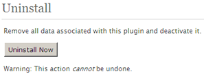Note: This action is not reversible. You should proceed carefully.
Before going live with WPJobAds, you should test the PayPal connectivity with your own test PayPal account.
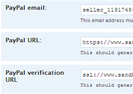Use https://www.sandbox.paypal.com/cgi-bin/webscr as the PayPal URL and ssl://www.sandbox.paypal.com:443/cgi-bin/webscr as the PayPal verification URL. Note that your server must support SSL. If it does not, you can try substituting https for the ssl part. If that does not work, you should contact your hosting provider.
WPJobAds works with virtually any WordPress compatible theme. This is because our plugin does not modify any core files. If you have some experience with PHP and HTML you can modify WPJobAds' templates.
We have separated all front-end template functions in a file named wpjobads-template.php which you can modify with care to suit your custom theme. WPJobAds will first check to see if a template function file named wpjobads-template-<WORDPRESS_THEME>.php exists — where <WORDPRESS_THEME> is the name of the current WordPress theme installed (without the angle brackets, of course) and use that template function file. If none found, the default wpjboads-template.php will be used instead.
| Function | Description |
|---|---|
wpjobads_template_job_listing |
Job listing on the front page |
wpjobads_template_view_job |
Detailed job ad page |
wpjobads_template_random_ad |
Random job ad shown in individual blog posts |
You can modify the above functions for example to add or omit certain fields in the job listing page.
It is best to keep all your pages in the same language. For this reason, we have included a .po file which you can translate into a language of your choice by using software such as Poedit:
The following is the necessary steps:
wpjobads.po as wpjobads-<CODE>.po where <CODE> is your language code (i.e, de_DE for German, fr_FR for French and so on)If you've done the above steps correctly, WPJobAds' interface should now be in the language specified by your wp-config.php file
Updating WPJobAds is very easy. Download the plugin from our download page, deactivate the current installation, upload the new files to the wp-content/plugins directory of your WordPress installation and activate.
The best and fastest way of getting support is to send a message to support@wpjobads.com stating the problem in detail and steps to recreate the problem.